Guide des options
Une poche plaquée (ou poche appliquée) est une pièce de tissu cousue sur l'extérieur d'un vêtement : les bords sont repliés, puis la poche est surpiquée sur trois côtés.
Bas de poche
Rectangulaire, angles coupés (chanfrein) ou angles arrondis.
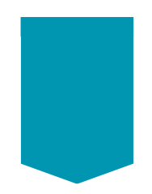
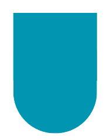
Entrée de poche
Droite (horizontale) ou biseautée (inclinée, avec un angle).
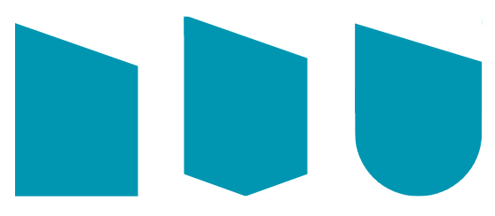
Soufflets
3 possibilités :
- Un soufflet latéral : bande sur les côtés et le fond.
- Un soufflet central : soufflet central extérieur ou soufflet intérieur central (invisible).
- Double soufflets : latéral et central.
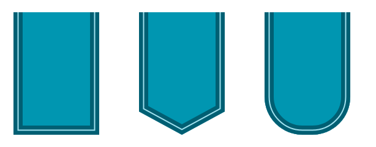
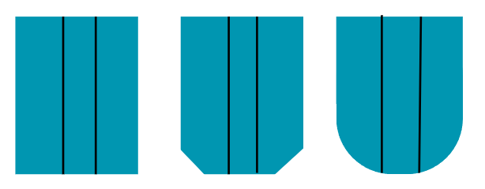
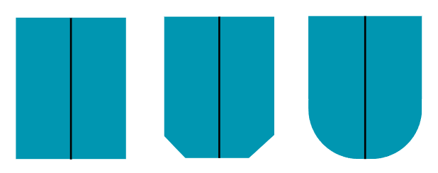
Soufflets et entrée biseautée. Chaque type de soufflet se combine avec une entrée biseautée, quelle que soit la forme du bas de poche (y compris les variantes de réalisation, plus bas).
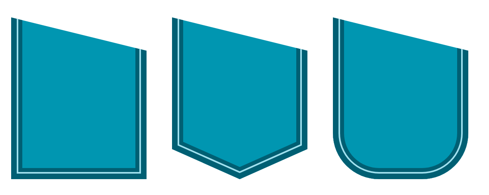
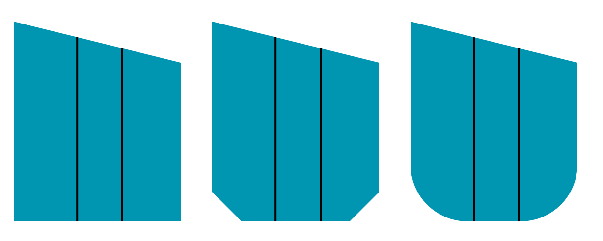
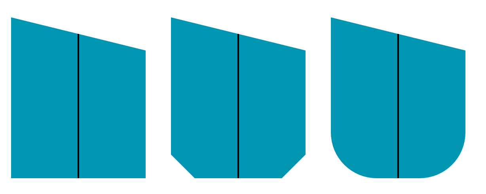
Poche gauche, poche droite ou paire
Avec une entrée biseautée, la poche n'est plus symétrique : il existe une poche gauche et une poche droite, qui sont l'image l'une de l'autre dans un miroir. « Gauche » et « droite » désignent le côté du vêtement sur lequel la poche est cousue, vu porté. Le menu « Côté du biseau » (actif dès que l'angle est supérieur à 0°) propose :
- Poche droite
- Poche gauche
- Les deux (une paire) : le patron contient les deux poches. Les pièces sont repérées (a) poche gauche et (b) poche droite.
Respectez l’envers et l’endroit du tissu lorsqu’ils sont différents : une pièce retournée donnerait un biseau dans le mauvais sens.
Variantes de réalisations
Pour le soufflet latéral et pour le double soufflet, l'assistant propose aussi une variante de réalisation où les pièces sont conçues et assemblées différemment :
- Soufflet latéral, variante en une pièce : le devant de la poche et les plis des soufflets sont sur la même pièce. Le revers est intégré à cette pièce.
- Double soufflet (central et latéral), variante à soufflets rapportés : le devant est identique à celui de la poche à soufflet central. Les soufflets sont coupés à part : 2 pièces de côté (identiques avec une entrée droite ; avec un biseau, côté haut et côté bas de l'entrée, chacune à repérer) et 1 pièce de fond. Le revers est un revers rajouté.
Ces variantes sont légèrement plus compliquées à couper et à coudre, mais elles sont plus élégantes. Elles existent uniquement avec le bas de poche rectangulaire. Les deux variantes acceptent l’entrée biseautée (25° au maximum).
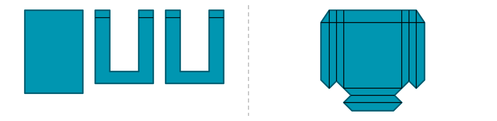
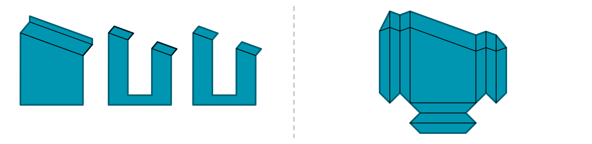
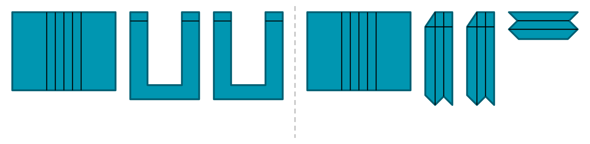
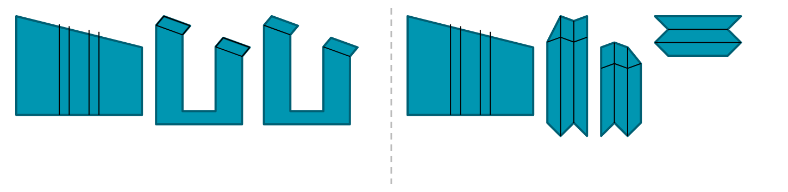
Revers
Revers : retour de tissu en haut de poche, vers l'extérieur ou vers l'intérieur. Si intégré, retourné vers l'intérieur, il est invisible.
- Poches sans soufflet et à soufflet latéral : le revers est intégré à la face avant (une seule pièce).
- Poches à soufflet central et à double soufflets : le revers n'est pas intégré, c'est un revers rajouté (pièce séparée).
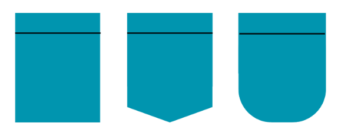
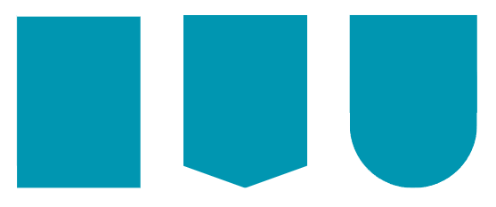
Rabat
Rabat : pièce qui recouvre l'entrée de poche, droit ou incliné, surpiqué ou inséré. Un rabat peut s'associer à tous les modèles de poche. Comme le bas de poche, le rabat peut être rectangulaire, à angles coupés ou à angles arrondis. Le choix d'un type de rabat est indépendant du type de poche choisi.
Un terme technique ? Voir le glossaire français-anglais.